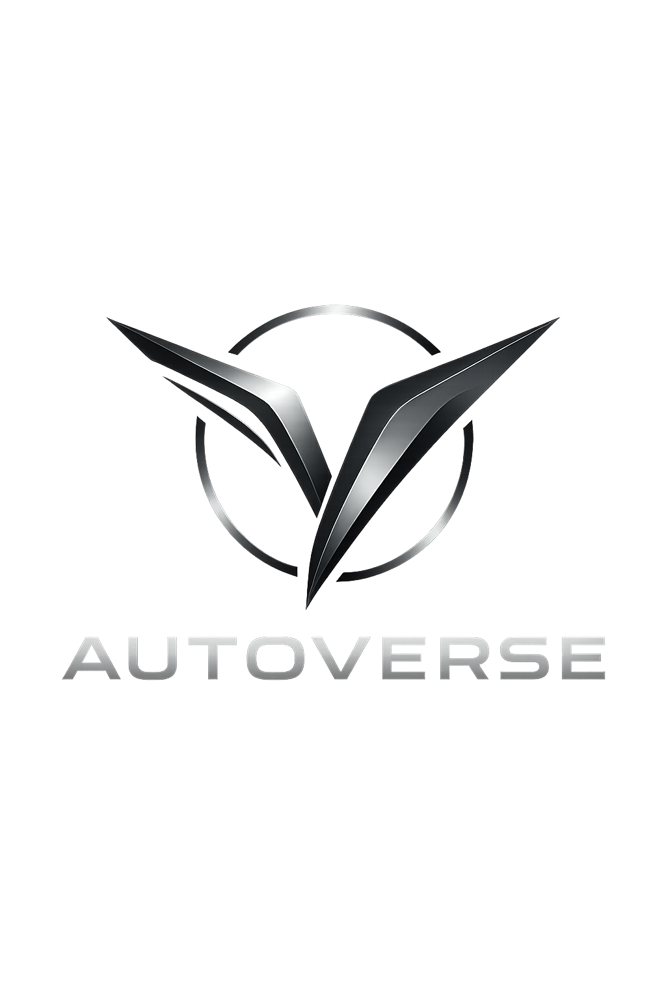
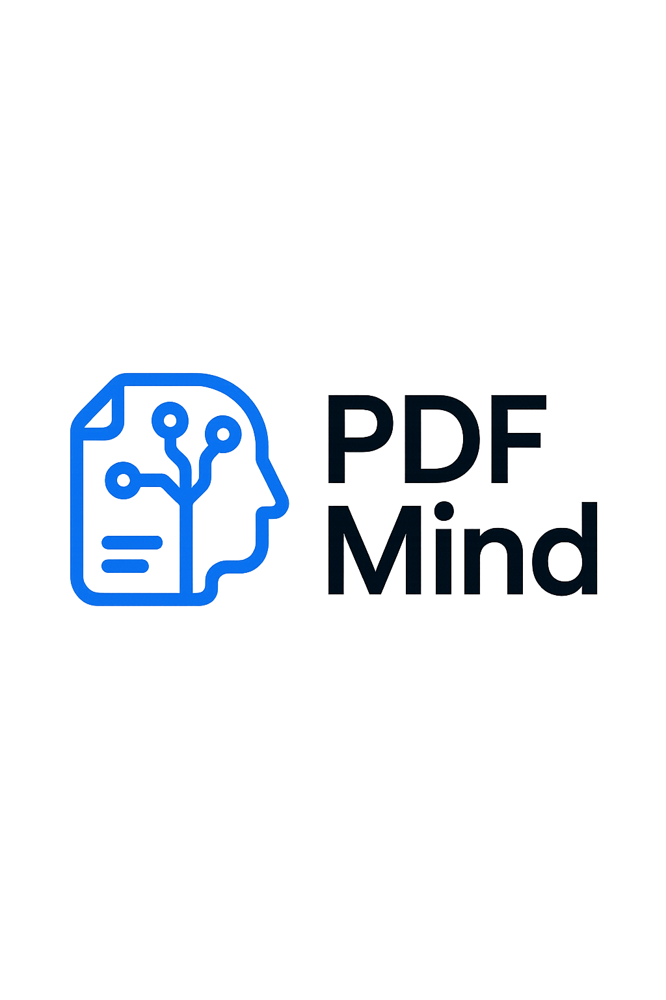

ADITYA SARMALKAR
Data Science Enthusiast | Transforming Data into Strategic Insights

Data Science Enthusiast | Transforming Data into Strategic Insights
I am a dedicated college student deeply immersed in the realm of data science, driven by the ambition to extract profound and actionable insights from complex datasets. With proficiency in Python, advanced machine learning techniques, and sophisticated data visualization, I am passionate about crafting impactful solutions that bridge the gap between raw data and practical, high-value applications.
My portfolio showcases hands-on experience across a diverse range of projects, reflecting a continuous pursuit of knowledge in emerging technologies and analytical methodologies. My ultimate objective is to leverage the transformative power of data science to contribute significantly and drive meaningful change across various industries.
23rd December 2024 – 23rd January 2025
Overview of the Power Apps maintenance scheduling interface developed during the internship.

KIRAYA reimagines public transportation, specifically for DTC buses, by streamlining fare management and elevating the commuter experience. This digital solution features an e-wallet, intelligent fare cards, real-time vehicle tracking, and tailored profiles for both passengers and ticket collectors, ensuring seamless transit.
Autoverse is a bespoke dealership management system designed for the discerning exotic and sports car market. It meticulously manages and facilitates the sale of both new and pre-owned high-performance vehicles, offering a truly premium Browse, booking, and inquiry experience with dedicated showcases for luxury marques.
PDF Mind is a smart, privacy-first AI tool that lets you chat with your PDF files. It runs locally on your device, so your data stays safe. Just upload a PDF, ask questions, and get instant answers — perfect for students, professionals, and researchers.
Audiofy is a sleek and user-friendly web app that allows you to convert YouTube videos into high-quality MP3 audio files with just one click. Designed for speed and simplicity, it works seamlessly across devices — no ads, no subscriptions. Built using Python, Flask, and yt-dlp, Audiofy ensures smooth performance and an effortless experience, letting you enjoy your favorite tracks offline anytime, anywhere.
This project features a sophisticated machine learning model engineered to accurately predict Ford car prices using comprehensive dataset features. Through rigorous Exploratory Data Analysis (EDA) and predictive modeling, the system delivers precise pricing insights, invaluable for both buyers and sellers, enhanced by advanced visualization and feature engineering.
This comprehensive dealership management system is precisely engineered for Toyota, offering an intuitive platform for clients to explore, schedule test drives, and inquire about the latest Toyota models. It prioritizes user convenience and engagement, showcasing Toyota's diverse range, from SUVs to hybrids.